In this lab, you'll get familiar with various features in Google Cloud AI Platform.
AI Platform Notebooks provides a managed Jupyter experience so you don't need to run notebook servers yourself. AI Platform Notebooks is well integrated with other GCP services like Big Query and Google Cloud Storage which makes it quick and simple to start your Data Analytics and ML journey on Google Cloud Platform.
To complete this lab, you need:
If you don't have a GCP Project, follow these steps to create a new GCP Project.
This codelab is focused on AI Platform Notebooks. Non-relevant concepts and code blocks are glossed over and are provided for you to simply copy and paste.
You'll need a Google Cloud Platform project with billing enabled to run this codelab. To create a project, follow the instructions here.
(Optional) The BigQuery connector uses the BigQuery Storage API. Search for the BigQuery Storage API in the console and enable the API if it is currently disabled.
To enable Cloud Services utilized in the lab environment:
1. Launch [Cloud Shell](https://cloud.google.com/shell/docs/launching-cloud-shell)
2. Set your project ID
PROJECT_ID=[YOUR PROJECT ID]
gcloud config set project $PROJECT_ID(If it asks to authorize Cloud shell access, authorize and proceed.)
3. Use gcloud to enable the services
gcloud services enable \
cloudbuild.googleapis.com \
container.googleapis.com \
cloudresourcemanager.googleapis.com \
iam.googleapis.com \
containerregistry.googleapis.com \
containeranalysis.googleapis.com \
ml.googleapis.com \
dataflow.googleapis.comThe Cloud Build service account needs the Editor permissions in your GCP project to upload the pipeline package to an AI Platform Pipelines instance.
PROJECT_NUMBER=$(gcloud projects describe $PROJECT_ID --format="value(projectNumber)")
CLOUD_BUILD_SERVICE_ACCOUNT="${PROJECT_NUMBER}@cloudbuild.gserviceaccount.com"
gcloud projects add-iam-policy-binding $PROJECT_ID \
--member serviceAccount:$CLOUD_BUILD_SERVICE_ACCOUNT \
--role roles/editorNavigate to AI Platform Notebooks section of your Cloud Console and click New Instance. Then select the latest TensorFlow Enterprise 2.x instance type without GPUs:
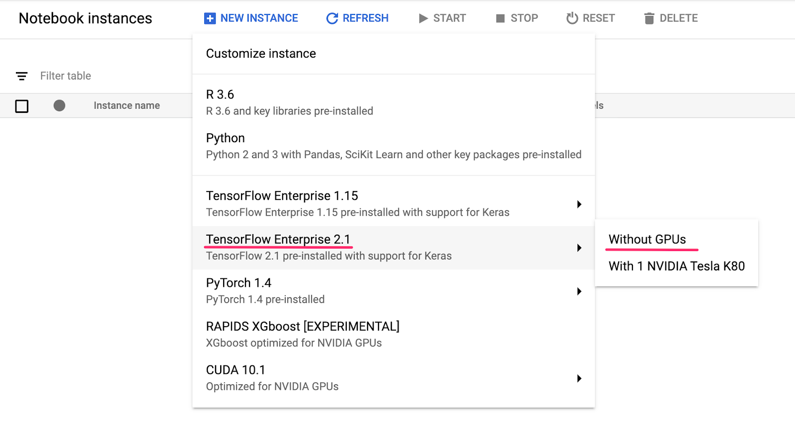
Give your instance a name or use the default. Then we'll explore the customization options. Click the Customize button:
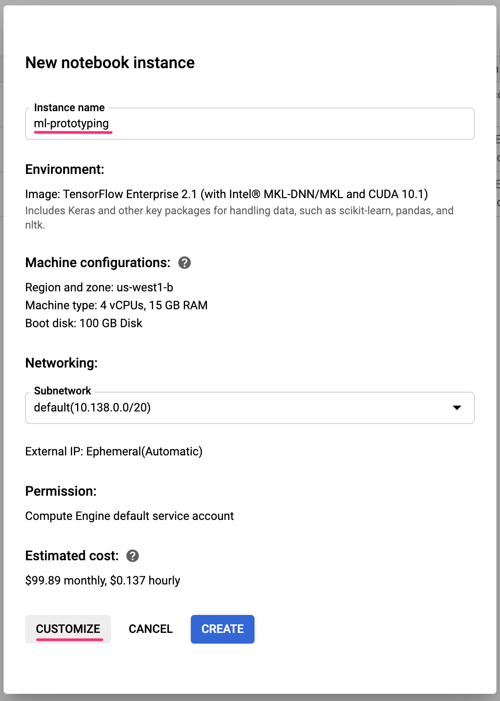
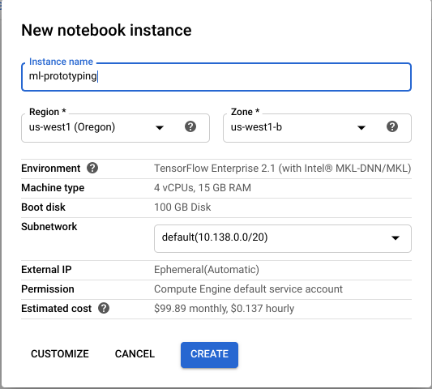
AI Platform Notebooks has many different customization options, including: the region your instance is deployed in, the image type, machine size, number of GPUs, and more. We'll use the defaults for region and environment. For machine configuration, we'll use an n1-standard-8 machine:
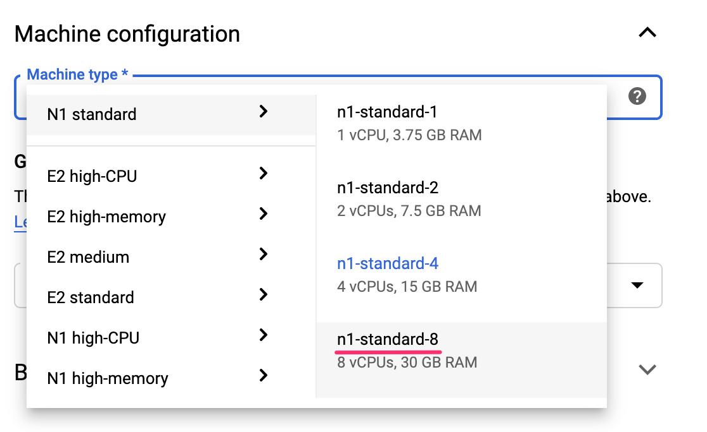
For the purpose of this lab, we do not need to add any GPUs, and we'll use the defaults for boot disk, networking, and permission. Select Create to create your instance. This will take a few minutes to complete.
Once the instance has been created you'll see a green checkmark next to it in the Notebooks UI. Select Open JupyterLab to open your instance and start prototyping:
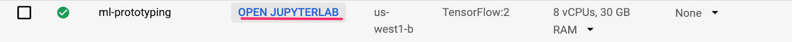
When you open the instance, create a new directory called codelab. This is the directory we'll be working from throughout this lab:
Click into your newly created codelab directory by double-clicking on it and then select Python 3 notebook from the launcher:
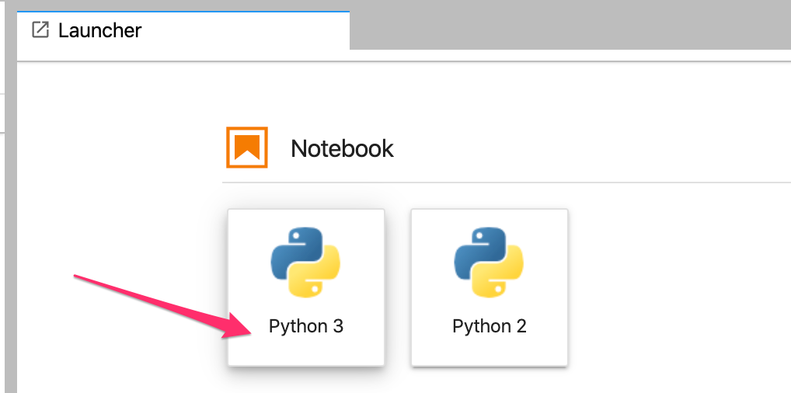
Rename the notebook to demo.ipynb, or whatever name you'd like to give it.
After you create a notebook instance, you might need to install software that your notebook depends on. You can install dependencies using a terminal window, or by adding install commands in a file in your notebook.
!pip install plotly==4.9.0Restart the kernel to use updated packages.
(Optional for Bigquery Magic)
!pip install --upgrade google-cloud-bigquery
!pip install --upgrade google-cloud-bigquery[bqstorage,pandas]
Restart the kernel to use updated packages.
Create a new cell in the notebook and import the libraries we'll be using in this codelab:
import pandas as pd
import numpy as np
import json
import pickle
import os
import time
from googleapiclient import discovery
from googleapiclient import errors
from sklearn.metrics import accuracy_score
from sklearn.model_selection import train_test_split
from sklearn.linear_model import SGDClassifier
from sklearn.pipeline import Pipeline
from sklearn.preprocessing import StandardScaler, OneHotEncoder
from sklearn.compose import ColumnTransformer
from google.cloud import bigquery
We will create a multi-regional bucket for this lab. You can upload data files into the bucket and explore the data through the notebook in further steps.
Create a bucket with a globally unique name and containing non-sensitive information.
Naming guidelines. E.g. workshop_artifact_store_<your_unique_id>
Input data description:
This data is derived from measurements during a fermentation process and includes a variety of physiological, biochemical and process parameters. While the full fermentation process might take up to 10 days and we collect real time measurements every few minutes the presented data has been summarized across our commonly used time intervals for assessment of strain performance `Absolute_Interval`.
As best practices, set location paths, connections strings, and other environment settings. Make sure to update REGION, and ARTIFACT_STORE with the settings reflecting your lab environment.
REGION = 'us-central1'
ARTIFACT_STORE = '<YOUR_GCS_BUCKET(starting with gs://>'
PROJECT_ID = !(gcloud config get-value core/project)
PROJECT_ID = PROJECT_ID[0]
DATA_ROOT='{}/data'.format(ARTIFACT_STORE)
INPUT_FILE = '{}/data/<data filename>'.format(ARTIFACT_STORE)
JOB_DIR_ROOT='{}/jobs'.format(ARTIFACT_STORE)
TRAINING_FILE_PATH='{}/{}/{}'.format(DATA_ROOT, 'training', 'X_train.csv')
VALIDATION_FILE_PATH='{}/{}/{}'.format(DATA_ROOT, 'validation', 'X_validate.csv')Next we'll read the data from your GCS bucket into a Pandas DataFrame to see what we'll be working with. It's important to shuffle our data in case the original dataset is ordered in a specific way.:
data = pd.read_csv(<YOUR_DATA_LOCATION_IN_GCS>'data = shuffle(data, random_state=4)
data.head()obj = INPUT_FILE
data = pd.read_excel(obj,sheet_name='data')
meta_data = pd.read_excel(obj,sheet_name='meta data')
data.head()data.head() lets us preview the first five rows of our dataset in Pandas. You should see something like this after running the cell above:
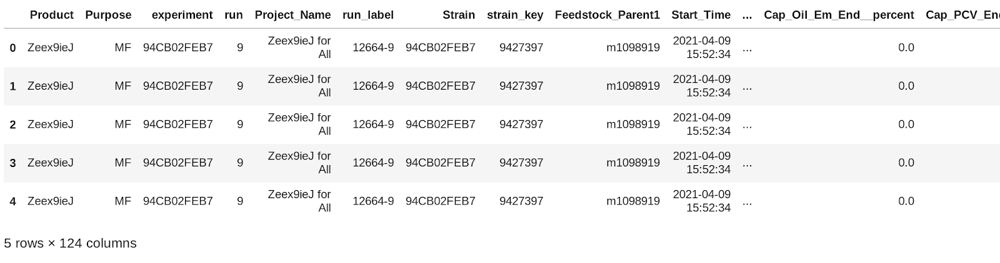
The variables are described in the meta_data and are composed of a variety of fermentation processes (meta data), physiological and biochemical parameters (independent).
Predictive modeling targets are denoted in meta_data.query(target == 1) and include:
We will select the Run_Performance column as the thing our model will predict.
meta_data.head()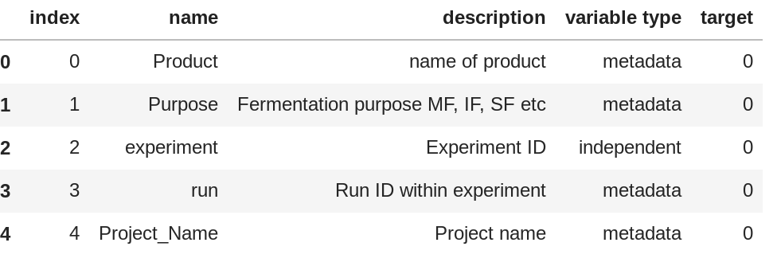
print('The data contains {} samples and {} variables'.format(data.shape[0],data.shape[1]))
print('There are {} unique strains which are replicated or measured under different fermentation conditions.'.format(data['Strain'].nunique()))
print('The variables are comprised of a variety of fermentation process, physiological and biochemical parameters:')
display(meta_data['variable type'].value_counts())
print('Predictive modeling targets include: {}'.format(meta_data.query('target == 1').name.values))
display(data[['Run_Execution', 'Run_Performance']].apply(lambda x: x.value_counts()))
Since the "Run_Performance" in this dataset can be "delta" or "gamma", we'll build a classification model. That means our model will predict a value to assign the input data to a particular class.
An important concept in machine learning is train / test split. We'll take the majority of our data and use it to train our model, and we'll set aside the rest for testing our model on data it's never seen before.
Add the following code to your notebook, which drops the label column from our dataset, and splits our data and labels into training and test sets:
#Prepare data for analysis
#Split out numeric from categorical variables
##var_type_filter = [x in ['physiological','biochemical','process'] for x in meta_data['variable type']]
var_type_filter = [x in ['independent'] for x in meta_data['variable type']]
var_dtype_filter = (data.dtypes == 'float64') | (data.dtypes == 'int64')
numeric_vars = (var_type_filter & var_dtype_filter).values
numeric_x_data = data[data.columns[numeric_vars]]
#things to try to predict
y_data = data[data.columns[(meta_data['target'] == 1).values]]
#meta data about variables
meta_data = meta_data.query('name in {}'.format(list(data.columns[numeric_vars].values))).set_index('name')
Split the input data into stratified sets of train, validate and test data.
from sklearn.model_selection import train_test_split
model_target = 'Run_Performance'
#maintain class balance
X_train, X_test, y_train, y_test = train_test_split(numeric_x_data, y_data, test_size=0.25, stratify = y_data[model_target], random_state=42)
#split train set to create a pseudo test or validation dataset
X_train, X_validate, y_train, y_validate = train_test_split(X_train, y_train, test_size=0.33, stratify= y_train[model_target], random_state=42)Check the target labels
y_test.head()To build a good model, it is important to manage and correct missing input data with an appropriate clean up strategy. In this dataset we impute missing numeric data with median.
#simple sklearn impute and scale numeric pipeline
from sklearn.pipeline import Pipeline
from sklearn.impute import SimpleImputer
from sklearn.preprocessing import StandardScaler
import numpy as np
#impute missing with median
imputer = SimpleImputer(missing_values=np.nan, strategy='median')
#auto scale
scaler = StandardScaler()
pipe = Pipeline([('imputer',imputer),('scaler', scaler)])
X_train_scaled = pipe.fit_transform(X_train)
Now you're ready to build and train your first model!
from sklearn.decomposition import PCA
pca = PCA(n_components=3)
pca_result = pca.fit_transform(X_train_scaled)
#collect results
def get_results(res,prefix='',ncol=3, add=None):
out= pd.DataFrame()
for i in range(ncol):
key = prefix + str(i+1)
value = res[:,i]
out.loc[:,key] = value
if add is not None:
out = pd.concat([out,add],axis=1)
return out
df = get_results(pca_result,'pca-', add = y_train.reset_index())
print('Explained % variation per principal component: {}'.format( (pca.explained_variance_ratio_ *100).round(2)))
df.head()
# sample scores
import plotly.graph_objects as go
#data for hover
tmp = df
customdata = np.stack(([tmp[x] for x in tmp]), axis = -1)
#hover text as html
res = []
for i,name in enumerate(tmp.columns):
res.append('<b>{}</b>: %{{customdata[{}]}}<br>'.format(name,i))
hovertemplate = ''.join(res)
#select variables to show
prefix = 'pca'
vars = []
for cols in df.columns:
if cols.find(prefix) !=-1:
vars.append(dict(label=cols,values=df[cols]))
#define custom colors
import plotly.express as px
color_var = model_target
colors = px.colors.qualitative.Plotly[0:df[color_var].nunique()] # change palette if not discreet
opt_color = []
_color_var = pd.factorize(tmp[color_var])
for i in _color_var[0]:
opt_color.append(colors[i])
fig = go.Figure(data=go.Splom(dimensions=vars,
marker=dict(color=opt_color,opacity=.5),
showupperhalf=False,
hovertemplate = hovertemplate,
customdata = customdata
)
)
fig.update_layout(
title='PCA scores',
width=800,
height=800,
)
fig.show()
# variable loadings
pca_loadings = pd.DataFrame()
df = pca_loadings
loadings=pca.components_.T * np.sqrt(pca.explained_variance_)
extra = (pd.DataFrame({'name': X_train.columns.tolist()})
.set_index('name')
.join(meta_data)
.reset_index()
)
pca_loadings = get_results(loadings,'pca-',add = extra)
pca_loadings.head()
#select variables to show
df = pca_loadings
vars = []
for cols in df.columns:
if cols.find('pca') !=-1:
vars.append(dict(label=cols,values=df[cols]))
fig = go.Figure(data=go.Splom(dimensions=vars,
showupperhalf=False,
hovertemplate = 'variable:%{text}',
text=df['name'],
)
)
fig.update_layout(
title='PCA loadings',
width=800,
height=800,
)
fig.show()
### plot top loadings variables raw data
import plotly.express as px
import math
df = pca_loadings
_df = pd.concat([y_train,X_train],axis=1)
_df = _df.melt(id_vars=[model_target])
_df = _df.query('variable in {}'.format(top_vars))
### plot top loadings variables raw data
import plotly.express as px
import math
df = pca_loadings
_df = pd.concat([y_train[model_target],X_train],axis=1)
_df = _df.melt(id_vars=[model_target])
_df['value'] = _df['value'].clip(lower=0)
_df = _df.query('variable in {}'.format(top_vars)).dropna()
_df['shifted_log_value'] = [math.log(x+1) for x in _df['value']]
fig = px.violin(_df, y="shifted_log_value", x="variable",
color=color_var, box=True, points="all",
hover_data=_df.columns,
color_discrete_map={'delta': colors[0] ,'gamma':colors[1]})
# fig.update_layout( yaxis_type="log")
fig.show()
BigQuery, Google Cloud's big data warehouse, has made many datasets publicly available for your exploration. AI Platform Notebooks support direct integration with BigQuery without requiring authentication.
model_target = 'Run_Performance'
data_load = numeric_x_data.join(y_data[model_target])
input_file_csv = '<desired name for csv data file>'
DATA_ROOT='{}/data'.format(ARTIFACT_STORE)
cmd = "data_load.to_csv('{}/{}.csv', index=False)".format(DATA_ROOT, input_file_csv)
eval(cmd)
print("Saved input data file as csv for BQ load.")
PROJECT_ID = !(gcloud config get-value core/project)
PROJECT_ID = PROJECT_ID[0]
DATASET_LOCATION='US'
DATASET_ID=<desired name of dataset> # e.g.'workshop'
TABLE_ID=<desired name of table> # e.g. 'fermentation_data'
DATA_SOURCE=<gcs location of the csv data file previous step>
# e.g. 'gs://workshop_artifact_id/data/fermentation_data.csv'
!bq --location=$DATASET_LOCATION --project_id=$PROJECT_ID mk --dataset $DATASET_ID
!bq --project_id=$PROJECT_ID --dataset_id=$DATASET_ID load \
--autodetect \
--source_format=CSV \
--skip_leading_rows=1 \
--replace \
$TABLE_ID \
$DATA_SOURCE We'll be using the Python client library for BigQuery to download the data into a Pandas DataFrame.
%%bigquery
SELECT *
FROM `<dataset_name>.<table_name>`
Create a training split.
!bq query \
-n 0 \
--destination_table <dataset_name>.<table_name> \
--replace \
--use_legacy_sql=false \
'SELECT * \
FROM `<dataset_name>.<table_name>` AS f_data \
WHERE \
MOD(ABS(FARM_FINGERPRINT(TO_JSON_STRING(f_data))), 10) IN (1, 2, 3, 4)'Save this training split.
!bq extract \
--destination_format CSV \
<dataset_name>.<table_name> \
$TRAINING_FILE_PATHCreate a validation split.
!bq query \
-n 0 \
--destination_table <dataset_name>.<table_name> \
--replace \
--use_legacy_sql=false \
'SELECT * \
FROM `<dataset_name>.<table_name>` AS f_data \
WHERE \
MOD(ABS(FARM_FINGERPRINT(TO_JSON_STRING(f_data))), 10) IN (8)'Save the validation split.
!bq extract \
--destination_format CSV \
<dataset_name>.<table_name> \
$VALIDATION_FILE_PATHdf_train = pd.read_csv(TRAINING_FILE_PATH)
df_validation = pd.read_csv(VALIDATION_FILE_PATH)
print(df_train.shape)
print(df_validation.shape)numeric_feature_indexes = slice(0, 61)
categorical_feature_indexes = slice(61, 62)
num_features_type_map = {feature: 'float64' for feature in df_train.columns[numeric_feature_indexes]}
categorical_features_map = {feature:'object'for feature in df_train.columns[categorical_feature_indexes]}
df_train = df_train.astype(num_features_type_map)
df_validation = df_validation.astype(num_features_type_map)
df_train_y = df_train.astype(categorical_features_map)
df_validation_y = df_validation.astype(categorical_features_map)
X_train = df_train.drop(model_target, axis=1)
y_train = df_train_y
X_validate = df_validation.drop(model_target, axis=1)
y_validate = df_validation_ypipe = Pipeline([('imputer',imputer),('scaler', scaler)])
X_train_scaled = pipe.fit_transform(X_train)#prepare data for modeling
#use the pipeline created above
_X_train = pipe.fit_transform(X_train)
_y_train = y_train[model_target] ## selected target label for prediction
_X_test = pipe.fit_transform(X_validate)
_y_test = y_validate[model_target]from sklearn.ensemble import RandomForestClassifier
from sklearn.utils.class_weight import compute_class_weight
from sklearn.model_selection import RandomizedSearchCV
# Simple hyperparameter tuning for random forest model
estimator = RandomForestClassifier(random_state = 42)
# tune grid
param_grid = {
'n_estimators': np.linspace(10, 200).astype(int),
'max_depth': [None] + list(np.linspace(3, 20).astype(int)),
'max_features': ['auto', 'sqrt', None] + list(np.arange(0.5, 1, 0.1)),
'max_leaf_nodes': [None] + list(np.linspace(10, 50, 500).astype(int)),
'min_samples_split': [1, 2, 5, 10],
'bootstrap': [True, False],
'class_weight' : ["balanced", "balanced_subsample"] # RF classifier tends to be biased towards the majority class, place a heavier penalty on misclassifying the minority class
}
print('class weights (1,0): {}'.format(compute_class_weight('balanced', np.unique(_y_train), _y_train)) )
# Create the random search model
rs = RandomizedSearchCV(estimator, param_grid, n_jobs = -1,
scoring = 'roc_auc', cv = 3,
n_iter = 10, verbose = 1, random_state=42)
# Fit
rs.fit(_X_train, _y_train)
#select best model
best_model = rs.best_estimator_
train_rf_predictions = best_model.predict(_X_train)
train_rf_probs = best_model.predict_proba(_X_train)[:, 1]
rf_predictions = best_model.predict(_X_test)
rf_probs = best_model.predict_proba(_X_test)[:, 1]
#evaluate performance on validation data
import matplotlib.pyplot as plt
from sklearn.metrics import classification_report
from sklearn.metrics import confusion_matrix
from sklearn.metrics import plot_confusion_matrix
print('Accuracy of classifier on validation set: {:.2f}'.format(best_model.score(_X_test, _y_test).round(2)))
print(classification_report(_y_test, rf_predictions))
plot_confusion_matrix(best_model, _X_test, _y_test,
# display_labels=['no','yes'],
cmap=plt.cm.Blues)
#evaluate performance on test data
_X_test2 = pipe.fit_transform(X_test)
_y_test2 = y_test[model_target]
rf_predictions = best_model.predict(_X_test)
rf_probs = best_model.predict_proba(_X_test)[:, 1]
print('Accuracy of classifier on test set: {:.2f}'.format(best_model.score(_X_test, _y_test).round(2)))
print(classification_report(_y_test, rf_predictions))
plot_confusion_matrix(best_model, _X_test, _y_test,
# display_labels=['no','yes'],
cmap=plt.cm.Blues)
AI Platform Notebooks has a direct integration with git, so that you can do version control directly within your notebook environment. This supports committing code right in the notebook UI, or via the Terminal available in JupyterLab. In this section we'll initialize a git repository in our notebook and make our first commit via the UI.
From your codelab directory, select Git and then Init from the top menu bar in JupyterLab:
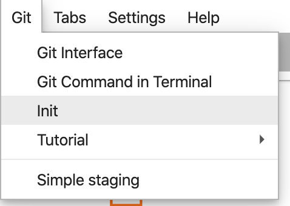
When it asks if you want to make this directory a Git Repo, select Yes. Then select the Git icon on the left sidebar to see the status of your files and commits:
In this UI, you can add files to a commit, see file diffs (we'll get to that later), and commit your changes. Let's start by committing the notebook file we just added.
Check the box next to your demo.ipynb notebook file to stage it for the commit (you can ignore the .ipynb_checkpoints/ directory). Enter a commit message in the text box and then click on the check mark to commit your changes:
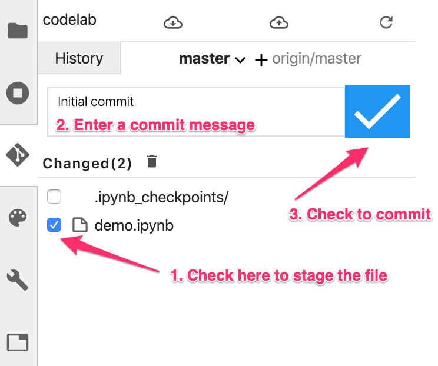
Enter your name and email when prompted. Then go back to the History tab to see your first commit:
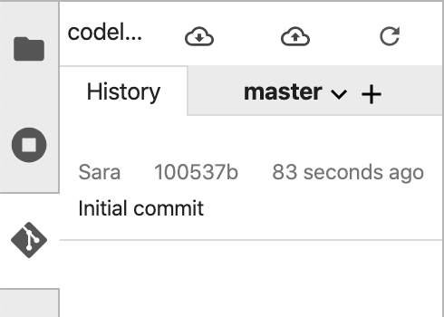
Note that the screenshots might not match your UI exactly, due to updates since this lab was published.
We'll build a Scikit Learn model in this section. Since we've already processed and split our data, this step will be pretty fast.
First, define some new environment variables for your Scikit Learn model. Be sure to replace your_sklearn_bucket with a unique bucket name:
git remote add origin git@github.com:username/<your-repo>.gitThen create that bucket using gsutil:
PROJECT_ID = !(gcloud config get-value core/project)
PROJECT_ID = PROJECT_ID[0]
STORAGE_CLASS='STANDARD'
BUCKET_LOCATION='US'
SKLEARN_MODEL_BUCKET='<Your Model bucket starting with gs://bkt>'
!gsutil mb -p $PROJECT_ID -c $STORAGE_CLASS -l $BUCKET_LOCATION -b on $SKLEARN_MODEL_BUCKET
You can export a Scikit Learn model that is trained locally to AI Platform for prediction.
scikit_model = best_model(Optional: For numeric targets, you can train a Scikitlearn regression model in code, using the built-in LinearRegression model which we imported at the beginning of the notebook:
scikit_model = LinearRegression().fit(
train_data.values,
train_labels.values
)(Optional: When the model is trained, export it to a local file using pickle:)
pickle.dump(scikit_model, open('model.pkl', 'wb'))Copy the model artifact you just exported to your Storage Bucket. When you create subsequent versions of your model, organize them by placing each one into its own separate directory within your Cloud Storage bucket.
!gsutil cp ./model.pkl $SKLEARN_MODEL_BUCKET/model.pklAI Platform Prediction organizes your trained models using model and version resources. An AI Platform Prediction model is a container for the versions of your machine learning model. To deploy a model, you create a model resource in AI Platform Prediction, create a version of that model, then link the model version to the model file stored in Cloud Storage. Create your model using gcloud. We'll call this one sklearn_fermentation:
REGION = 'us-central1'
model_name = 'sklearn_fermentation'
labels = "task=classifier,domain=biotech"
!gcloud ai-platform models create $model_name \
--regions=$REGION \
--labels=$labels
Then deploy the model:
SKLEARN_VERSION_NAME='v01'
!gcloud beta ai-platform versions create $SKLEARN_VERSION_NAME --model=$model_name \
--origin=$SKLEARN_MODEL_BUCKET \
--runtime-version=1.15 \
--python-version=3.7 \
--framework=scikit-learn
Finally, make sure your new Scikit Learn model is working correctly by passing it the same test JSON file as above:
!gcloud ai-platform predict --model=sklearn_fermentation --json-instances=predictions.json --version=$SKLEARN_VERSION_NAME
Finally, we'll learn how to connect the git repo in our notebook instance to a repo in our GitHub account. If you'd like to do this step, you'll need a GitHub account.
In your GitHub account, create a new repository. Give it a name and a description, decide if you'd like it to be public, and select Create repository (you don't need to initialize with a README). On the next page, you'll follow the instructions for pushing an existing repository from the command line.
Open a Terminal window, and add your new repository as a remote. Replace username in the repo URL below with your GitHub username, and your-repo with the name of the one you just created:
git remote add origin git@github.com:username/<your-repo>.git
Next you'll need to authenticate to GitHub from within your notebook instance. This process varies depending on whether you have two-factor authentication enabled on GitHub.
If you're not sure where to start, follow the steps in the GitHub documentation to create an SSH key and then add the new key to GitHub.
To make sure you've set things up correctly, run git remote -v in your terminal. You should see your new repository listed as a remote. Once you see the URL of your GitHub repo and you've authenticated to GitHub from your notebook, you're ready to push directly to GitHub from your notebook instance.
To sync your local notebook git repo with your newly created GitHub repo, click the cloud upload button at the top of the Git sidebar:
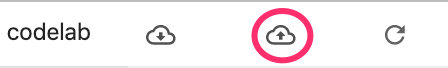
Refresh your GitHub repository, and you should see your notebook code with your previous commits! If others have access to your GitHub repo and you'd like to pull down the latest changes to your notebook, click the cloud download icon to sync those changes.
On the History tab of the Notebooks git UI, you can see if your local commits are synced with GitHub. In this example, origin/master corresponds with our repo on GitHub:
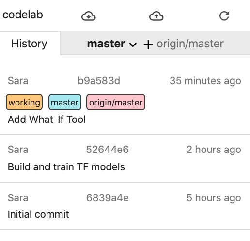
Whenever you make new commits, just click the cloud upload button again to push those changes to your GitHub repo.
In the AI Platform Notebooks page on the GCP console, select the notebook instance and click DELETE.
You've done a lot in this lab 👏👏👏
To recap, you've learned how to: